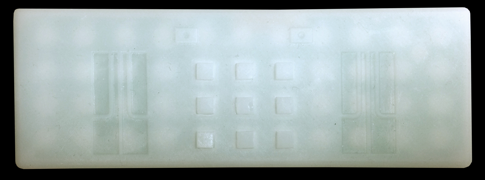

Materializing China: Objects from Harvard's Collections
Freshman Seminar 70L: Ancient East Asia: Contested Archaeologies of China, Korea, and Japan
Department of Archaeology
Professor: Rowan Flad, John E. Hudson Professor of Archaeology in the Department of Anthropology, Harvard University
Teaching Fellow: Zoë Eddy, Ph.D. candidate, Social Anthropology and Archaeology, Harvard University
Seminar Members
1. James Gui
2. Jaclyn Li
3. Chad Minato
4. Eugene Song
What are the origins of the people, cultures, and civilizations of East Asia, and how do we understand those origins? The varied and complicated histories of people and societies in the modern Nation-States of China, Korea, Japan, and other nearby countries, are rooted in a distant past. Our only evidence from this past comes from the material remains left behind and studied by archaeologists.
Over the course of the Fall 2016 semester, FS70L students explored these materials. Investigating a wide array of objects and contexts, students explored the archaeological controversies that show the stakes of archaeological interpretation to political and social discourse in the modern world. As a class, we investigated fundamental questions in the prehistory and early history of East Asia through the lens of archaeological discoveries. These questions included human origins, the origins of agriculture, the emergence of stratified, complex societies, early processes of globalization across Eurasia, conflicts between centers and peripheries, Indigenous peoples, the origin of Buddhism, and more. In addition to learning about the major issues in Ancient East Asian archaeology, we also explored controversies that have emerged in recent East Asian archaeological research. We discussed why archaeological topics are subject to controversial interpretation and what is at stake in these disagreements.
Throughout the course, we examined how ancient cultural material continues to significantly impact the modern world. We similarly looked at the types of debates that occur over the question "who owns the past?" As a capstone project to classroom conversations and research, we developed this exhibit. We present four objects, from Peabody Museum and Harvard Art Museums collections, that demonstrate different parts of China's ancient and historical past. All of these objects can be understood multivalently. We invite visitors to consider how these artifacts function not only as physical representations of past lives, but also as material indeces of dynamic and complicated histories.

To listen to the brief discussions of these objects and their histories, locate the remote pictured above. Each of the four corner buttons corresponds to one of the four projects.